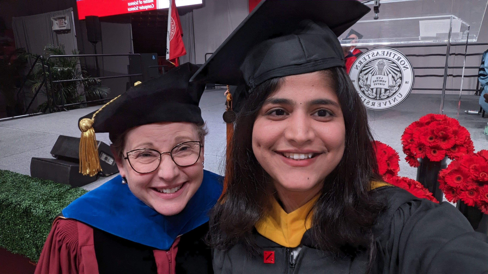

I’ve always believed that learning isn’t a phase—it’s a way of life. From my early academic days to my professional journey, I’ve held myself to high standards, pushing forward to learn and achieve more. In my bachelor’s degree, I was proud to finish in the top 1% of my department, a reflection of my dedication to my craft. My drive led me to pursue a master’s, where I graduated with a perfect 4.0 GPA. For me, these accomplishments aren’t just about the scores; they represent my love for uncovering knowledge, solving complex problems, and mastering new challenges. Learning is my foundation, and it’s what keeps me motivated to grow every day.
